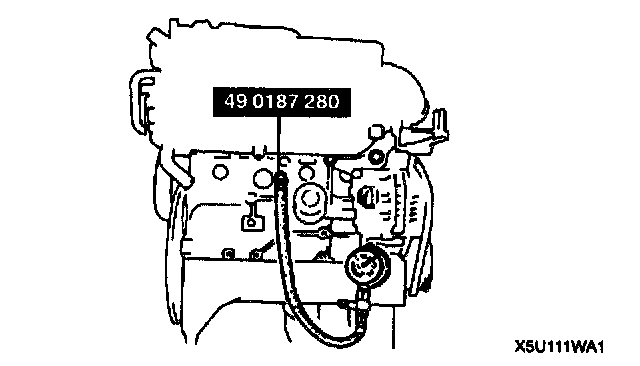
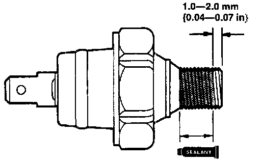

Engine Lubrication: Testing and Inspection
OIL PRESSURE INSPECTIONWarning:
^ Continuous exposure with USED engine oil has caused skin cancer in laboratory mice. Protect your skin by washing with soap and water immediately after this work.
^ When the engine and the oil are hot, they can badly burn. Turn off the engine and wait until they are cool.
1. Remove the oil pressure switch.

2. Screw the Special Service Tool (SST) into the oil pressure switch installation hole.
3. Warm up the engine to normal operating temperature.
4. Run the engine at the specified speed, and note the gauge readings.
Note:
^ The oil pressure can vary with oil viscosity and temperature.
Oil pressure: 295 - 392 kPa (3.0 - 4.0 kgf/cm2, 43 - 56 psi) [3,000 rpm]
5. If the pressure is not as specified, inspect for amount of engine oil, oil leakage, or any wear parts inside of engine etc. Repair or replace as necessary.
6. Stop the engine and wait until it is cool.
7. Remove the (SST)

8. Apply silicone sealant to the oil pressure switch threads as shown.
9. Install the oil pressure switch.
Tightening torque: 12 - 17 Nm (1.2 - 1.8 kgf.m, 9 - 13 ft. lbs.)
10. Start the engine and inspect for oil leakage.